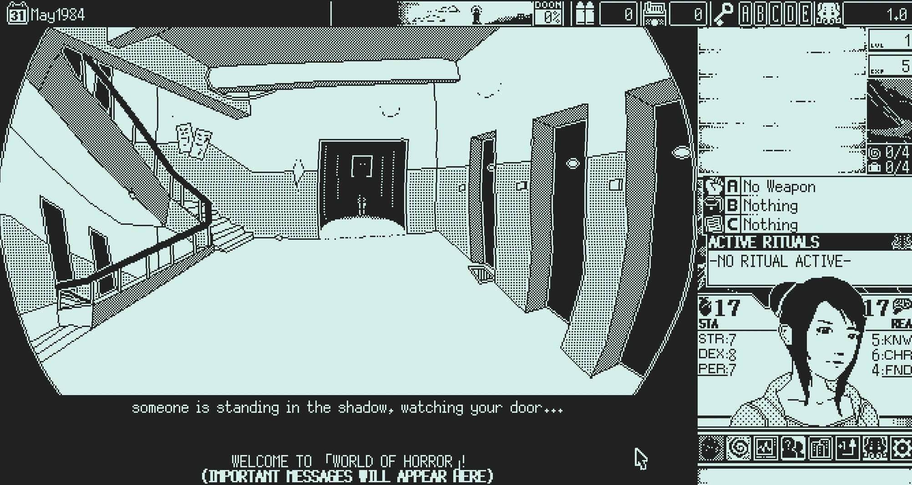
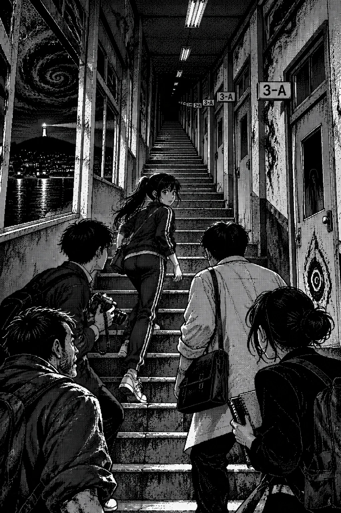
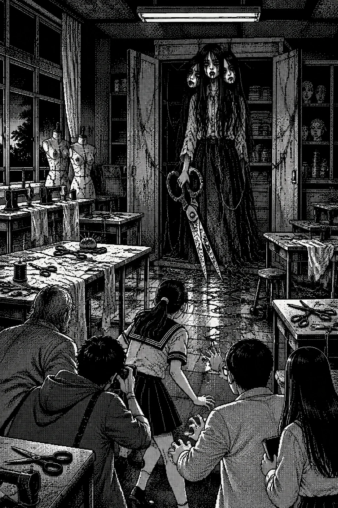
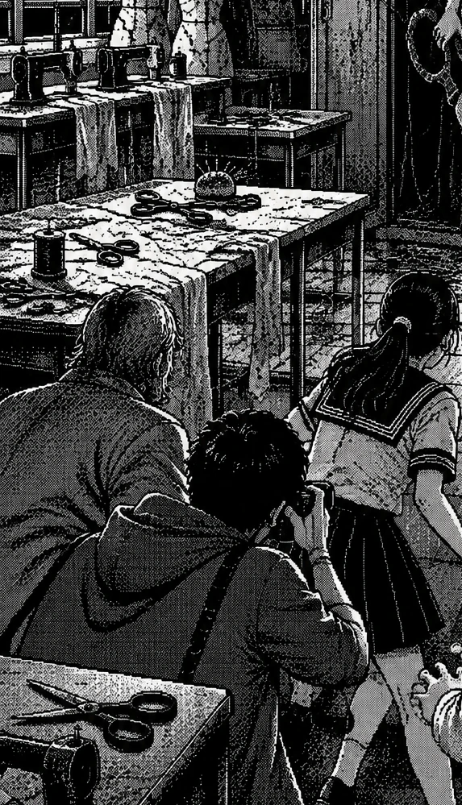
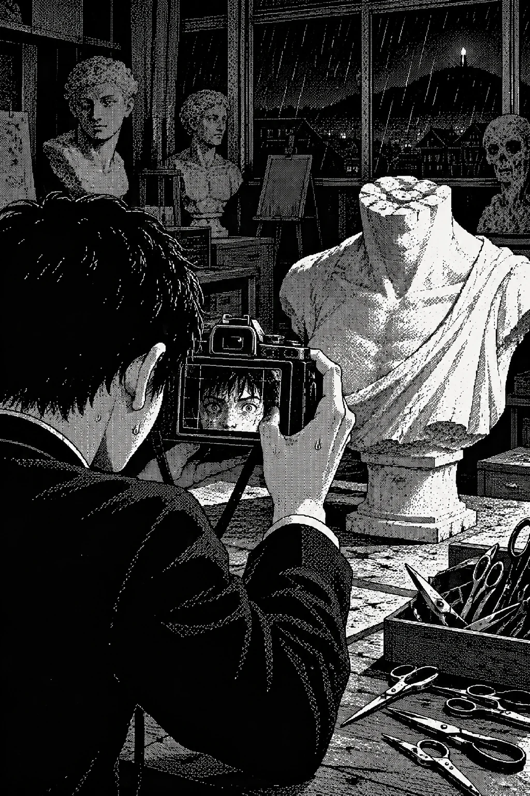
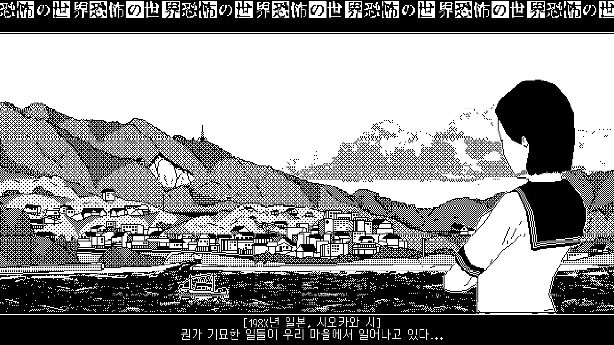

Trường trung học Shiokawa không được xây để giữ bí mật.
Ban ngày, nó là một khối bê tông cũ nằm trên sườn dốc, nhìn xuống thị trấn và xa hơn là biển. Các lớp học mở cửa về phía hành lang dài, cửa kính mờ vì dấu tay học sinh, bảng đen phủ bụi phấn, sân thể thao loang nước sau mưa, nhà kho câu lạc bộ luôn có mùi giày ẩm và gỗ mục. Mọi thứ ở đó đều bị sử dụng quá nhiều để còn giữ vẻ trang nghiêm: bàn ghế xước tên học sinh cũ, tủ giày thiếu vài cánh cửa, loa phát thanh rè, nhà vệ sinh tầng hai có buồng cuối không ai thích dùng, phòng thủ công khóa bằng ổ khóa quá mới so với cánh cửa quá cũ.
Nhưng ban đêm, trường học trở thành thứ khác.

Nó không thay đổi bằng cách sụp đổ hay biến hình công khai. Nó chỉ trả lại tất cả những gì ban ngày che đi. Tiếng bước chân trong hành lang không còn bị tiếng học sinh lấn át. Bảng thông báo không còn bị người đi qua nhìn lướt. Cầu thang có thời gian để nhớ những người từng chạy qua nó. Tường có thời gian để nghe lại những lời thì thầm mà học sinh tưởng đã biến mất sau khi tan học. Phòng thủ công, phòng mỹ thuật, phòng sinh học, nhà kho, cầu thang, nhà vệ sinh – mỗi nơi đều giữ một phần nhỏ của tuổi trẻ bị ép vào khuôn: sợ hãi, xấu hổ, ghen tị, cô đơn, áp lực, lời đồn, trò đùa độc ác, những lá thư không ai đọc, những cái tên bị viết lên bàn rồi cạo đi.
Đêm đó, tất cả những thứ ấy được phép có thân xác.
Aiko đứng ở giữa hành lang tầng hai, nhìn lên cầu thang dẫn đến tầng ba. Bên cạnh cô, Kouji giữ máy ảnh bằng cả hai tay, ngón trỏ đặt gần nút chụp nhưng không dám chạm. Haru đứng sau, người hơi lệch để chắn đường về bằng nửa thân mình, con dao bếp vẫn gói trong khăn nhưng khăn đã được tháo lỏng. Mizuno đến muộn nhất, áo khoác bệnh viện khoác ngoài áo sơ mi, túi y tế nhỏ đeo một bên vai, mặt xanh xao như người chưa quyết định được mình đang trực ca nào: ca của bệnh viện hay ca của thị trấn. Kirie đứng cạnh cửa lớp trống, cuốn sổ ôm trước ngực, phần băng quấn trên tay hơi thấm mực đen từ bên dưới.
Không ai trong số họ thuộc về cùng một đời sống. Nếu gặp nhau ban ngày, họ có thể lướt qua nhau mà không để lại gì: một học sinh chạy qua sân, một cậu trai cầm máy ảnh, một bác sĩ mua cà phê, một người đàn ông hút thuốc ở quán mì, một cô gái im lặng trong thư viện. Nhưng hành lang trường học đêm ấy đã rút họ ra khỏi các đời sống riêng và đặt cùng một hàng, như các vật chứng trên bàn giáo viên.
Loa phát thanh trên trần rè lên lần nữa.
“Học sinh trực nhật lớp 3-A vui lòng lên phòng thủ công. Kéo đã được phát đủ. Những học sinh không có tên trên bảng vui lòng tự bổ sung trước khi chuông đêm vang. Không trả lời tiếng gõ lần thứ ba. Không chạy trên cầu thang. Không nhìn vào ảnh lớp nếu ảnh nhìn lại.”
Giọng đọc giống giọng nữ sinh, nhưng quá đều. Không vấp. Không thở. Không có chút ngại ngùng của người đọc thông báo trường. Nó giống một đoạn băng đã được phát đi quá nhiều lần, đến mức giọng nói bị mài nhẵn khỏi người từng nói.
Haru nhìn lên loa.
“Trường nào cũng có thông báo dễ thương vậy à?”
Aiko không cười. “Không.”
“Tiếc.”
Kirie mở sổ, nhưng các trang trắng. Cô cau mày. “Nơi này không muốn bị đọc bằng chữ.”
“Vậy đọc bằng gì?” Mizuno hỏi.
Aiko nhìn cầu thang. “Nhịp.”
Cô nói xong mới nhận ra mình chắc chắn đến mức nào. Cầu thang đã kéo dài khi cô chạy. Nó phản ứng với tốc độ, với sợ hãi, với việc cô để cơ thể hành động trước suy nghĩ. Nếu nó dùng nhịp, có lẽ mọi thứ trong trường đêm nay cũng vậy: tiếng gõ, tiếng kéo, tiếng loa, tiếng chuông. Không phải ngẫu nhiên mà bản tin nhắc lần thứ ba. Ba là ngưỡng. Ba là mở. Ba là đồng ý nếu người nghe không biết mình đã đồng ý.
Họ đi lên.
Aiko bước đầu tiên, không nhanh. Cô đặt chân lên từng bậc, đếm trong đầu nhưng không để nhịp thành ba. Một, hai, nghỉ. Một, hai, nghỉ. Sau lưng cô, Kouji cố bắt chước nhịp ấy, nhưng thỉnh thoảng hơi thở cậu vấp. Haru đi cuối, nặng chân hơn, nhưng ông biết cách giữ cơ thể không phản ứng quá lộ. Mizuno nhìn tường, tìm dấu hiệu nào đó của vật chất thật: vết nứt, vết ẩm, số tầng. Kirie thì nhìn các tờ giấy dán trên tường cầu thang. Ban ngày chúng là thông báo câu lạc bộ. Đêm nay, chữ trên đó bị kéo thành các vệt dài, như ai đó đã dùng tay ướt vuốt qua trước khi mực khô.
Ở bậc thứ mười bảy, họ không đến chiếu nghỉ.
Aiko dừng ngay.

Không ai hỏi vì sao. Họ đều thấy cầu thang vẫn còn phía trên.
Từ trong tường bên phải vang ra một tiếng gõ.
Một.
Haru giơ tay ra hiệu im.
Tiếng thứ hai vang từ tường bên trái.
Hai.
Không khí căng lên trước tiếng thứ ba. Đó là điều tệ nhất: sự chờ đợi tự biến thành tiếng gõ trong đầu. Kouji nghe nhịp tim mình đập mạnh đến mức sợ nó sẽ thay tường hoàn thành nhịp. Mizuno đặt tay lên cổ tay cậu, không phải như bác sĩ khám bệnh đầy đủ, chỉ như người giữ một nhịp người thật khỏi bị kéo đi. Aiko cúi xuống, tháo dây giày rồi buộc lại thật chậm. Một hành động vô nghĩa nếu xét mục tiêu đi lên cầu thang, nhưng chính vì vô nghĩa mà nó cắt nhịp chờ. Haru khẽ chửi một câu rất đời, đủ thô để phá sự trang trọng của bóng tối. Kirie dùng móng tay cào một đường ngắn lên bìa sổ.
Tiếng thứ ba không đến.
Cầu thang ngắn lại.
Chiếu nghỉ hiện ra ngay trước mặt họ.
Trên tường tầng ba, các cửa lớp không còn ghi số phòng. Mỗi cửa ghi một cái tên bằng phấn trắng. Có tên họ biết. Aiko. Kouji. Mizuno. Haru. Kirie. Có tên họ chưa gặp hoặc mới nghe qua bản tin: Moriko, Mizuki, Yashiro, Miku. Có những tên bị xóa một nửa, như thể người mang tên đó đã bị thị trấn thử dùng trong một lần khác. Ở cuối hành lang, phòng thủ công mở hé. Ánh đèn bên trong vàng, thấp, quá ấm so với hành lang lạnh.
Kouji nâng máy ảnh lên.
Kouji vừa đặt chân vào hành lang tầng ba vừa nghĩ đến một cuốn sổ cậu chưa dám mở trước mặt người khác. Sáng hôm qua, ở đáy ngăn bàn của một học sinh không còn tới lớp, cậu tìm thấy mấy trang giấy kẻ ô. Chúng được gấp phẳng, buộc bằng dây đỏ, mép giấy lấm tấm những dấu ố giống vết nước biển. Người viết không kể mình sợ. Người đó chỉ liệt kê những việc cần làm để được về nhà: kiểm tra tủ đồ, tìm viên phấn còn nguyên, đếm các ngọn nến, chép lại hình vẽ dưới trang cuối. Bên cạnh mỗi việc là một ô vuông. Không ô nào được đánh dấu hoàn thành.
Cậu đã chụp từng trang, nhưng ảnh tráng ra trống trơn, chỉ riêng đường chỉ đỏ hiện rất rõ. Điều ấy làm Kouji sợ hơn một tấm ảnh ma. Nếu chiếc máy ảnh không thể ghi lại chữ, làm sao cậu biết trong sổ không còn thứ gì đang tiếp tục tự viết? Cậu định hỏi Kirie, rồi thấy cô đang nhìn những cái tên trên cửa lớp. Cô không nhìn họ như nhìn một lời đe dọa, mà như một người cố nghe xem trong phòng bệnh kế tiếp có ai còn thở.
Kouji không nói về cuốn sổ. Cậu nghĩ đó là chuyện riêng của người mất tích. Chỉ đến khi tiếng kéo vang lên từ cuối hành lang, cậu mới nhận ra người viết đã đi đúng con đường này. Trong chiếc túi máy ảnh, dây đỏ quanh cuốn sổ khẽ siết vào thân máy. Cậu nghe tiếng giấy sột soạt. Một ô vuông nào đó, ở đâu đó trong cuốn sổ không ai mở, đã vừa được đánh dấu.
“Đợi,” Haru nói.
“Cần biết bên trong có gì.”
“Cậu chụp trước khi nhìn à?”
Kouji im một giây. “Đôi khi máy thấy thứ mắt bỏ qua.”
“Đôi khi thứ đó muốn được chụp.”
Cậu hạ máy xuống một chút, nhưng không buông.
Họ đi về phía phòng thủ công. Mỗi bước, tiếng kéo bên trong rõ hơn. Không phải một chiếc kéo. Nhiều chiếc. Mở ra, khép lại, mở ra, khép lại. Âm thanh nhỏ nhưng sắc, đi thẳng vào chân răng. Trước cửa phòng, sợi chỉ đỏ đã bò ra từ dưới khe, nhưng không còn đơn lẻ. Nhiều sợi nằm trên sàn, đan thành những đường mảnh. Chúng không tạo hình xoắn. Chúng tạo một đường dẫn.
Aiko cúi xuống nhìn.
“Giống đường kẻ sân chạy,” cô nói.
Haru nhìn cô. “Ý tốt hay xấu?”
“Đường kẻ không xấu. Vấn đề là ai đặt luật chạy.”
Cô đẩy cửa.
Phòng thủ công
Phòng thủ công thở ra.
Không có cách nào khác để gọi cảm giác ấy. Một luồng khí ấm và ẩm đi qua mặt họ, mang theo mùi vải cũ, phấn, gỗ, kim loại và một mùi rất nhạt của tóc ướt. Các bàn học đã bị đẩy sát tường. Trên mỗi bàn có kéo, kim, chỉ, thước, mảnh vải trắng, giấy màu, nút áo. Mọi thứ được xếp quá ngay ngắn, như chuẩn bị cho một tiết học mà giáo viên đã chết nhưng bài giảng vẫn tiếp tục.
Ở cuối phòng có một người đứng quay lưng.
Dáng phụ nữ, cao hơn người thường một chút. Vai hẹp, cổ dài, tóc đen xõa xuống lưng như một tấm vải ướt. Đồng phục giáo viên cũ, nhưng đường may không thẳng; các mũi chỉ ở vai và lưng lộ ra như đã được khâu lại nhiều lần. Trong tay cô ta là một chiếc kéo lớn, loại dùng cắt vải dày. Hai lưỡi kéo mở ra khép lại theo nhịp rất chậm.
Aiko từng nghe câu chuyện này. Ai học ở Shiokawa cũng từng nghe, dù mỗi năm câu chuyện đổi vài chi tiết. Có người nói cô ta là giáo viên thủ công tự sát trong tủ. Có người nói là học sinh bị bắt nạt, trốn trong phòng đến sáng thì biến mất. Có người nói nếu gọi đúng tên cô ta, cô ta sẽ trả lời bằng tiếng kéo. Có người nói nếu gọi sai, cô ta sẽ cắt miệng bạn rộng ra để bạn phát âm lại. Câu chuyện từng buồn cười khi kể trong giờ nghỉ trưa, khi ánh nắng còn trên bàn và cả lớp đông người.
Trong căn phòng này, nó không buồn cười.
Người phụ nữ quay đầu.
Cổ xoay quá xa so với thân. Mặt trắng nhợt, không phải trắng như phấn trang điểm mà như giấy bị ngâm nước. Tóc che một phần mắt. Miệng là một đường khâu mảnh, chỉ đen kéo từ mép này sang mép kia. Khi cô ta nhìn họ, tất cả kéo trong phòng dừng lại.
Rồi cùng mở ra.
Kouji bấm máy.
Flash lóe lên trước khi Haru kịp chửi.

Trong khoảnh khắc trắng, cả căn phòng hiện ra hai lớp. Lớp đầu là phòng thủ công hiện tại. Lớp thứ hai là một phòng học cũ hơn, đầy học sinh ngồi im, miệng bị khâu bằng chỉ đỏ, tay đặt trên bàn. Ở giữa phòng, người phụ nữ không đứng một mình. Sau lưng cô ta là hàng chục hình người mờ chồng lên nhau: giáo viên, học sinh, người may vá, những đứa trẻ cầm thư góp ý, những bàn tay cầm kéo không thuộc về cùng một cơ thể. Câu chuyện không có một nạn nhân. Nó là nơi các lời không được nghe bị khâu lại thành một hình dạng duy nhất.
Ảnh in ra.
Kouji nhìn ảnh, mặt tái.
Trong ảnh, phía sau người phụ nữ có một cái tủ gỗ cao. Nhưng trong phòng thật, phía sau cô ta chỉ là tường.
Người phụ nữ lao tới.
Không nhanh theo cách người chạy nhanh. Cô ta trượt qua khoảng cách, như đoạn phim bị cắt mất vài khung. Aiko phản ứng trước. Cô nghiêng người, kéo Kouji sang bên. Lưỡi kéo bổ xuống chỗ cổ cậu vừa đứng. Bàn gỗ phía sau bị cắt một đường sâu, thẳng, sạch quá mức. Haru mở khăn, rút dao bếp, chặn cú thứ hai. Dao va vào kéo tạo âm thanh sắc đến mức Mizuno cảm thấy tai trong đau nhói.
“Ra ngoài!” Mizuno nói.
“Cửa đâu?” Kirie đáp.
Cửa vừa biến mất.
Không đóng. Không khóa. Biến mất khỏi tường như chưa từng có. Ở nơi cửa, chỉ còn một bảng vải trắng treo lửng, trên đó kim và chỉ tự khâu một dòng chữ:
Bài học chưa xong.
Aiko nhìn quanh tìm thứ dùng được. Không phải vì cô nghĩ theo kiểu chiến đấu. Vì cơ thể cô cần môi trường: bàn, ghế, khoảng trống, quãng chạy, góc thoát. Phòng thủ công quá chật cho tốc độ, nhưng nhiều vật có thể làm lệch nhịp. Cô giật cả hộp chỉ trên bàn ném vào mặt người phụ nữ. Chỉ bung ra như mạng. Một vài sợi cuốn quanh lưỡi kéo lớn, không giữ được lâu nhưng làm nó chậm nửa nhịp.
Haru tận dụng nửa nhịp đó, đẩy ghế vào giữa. Lưỡi kéo cắt ghế làm đôi. Ông lùi lại, bàn tay tê vì lực va. Mizuno kéo Kouji về phía bàn cạnh tường, nơi có đèn bàn, hộp kim và mảnh vải. Kirie đứng sát bảng, nhìn dòng chữ đang tự khâu. Cô không đọc nó thành tiếng. Cô dùng móng tay cào rách một phần vải trước khi câu hoàn chỉnh.
Người phụ nữ rít lên.
Âm thanh không phát ra từ miệng khâu. Nó phát ra từ tất cả kéo trong phòng. Kim loại rung, lưỡi kéo mở khép loạn nhịp. Trên các bàn, những mảnh vải trắng phồng lên như có thứ gì bên dưới đẩy ra.
Kouji nhìn ảnh lần nữa. Cái tủ gỗ trong ảnh có vết khắc trên cửa. Cậu soi đèn bàn vào góc phòng nơi tủ đáng lẽ đứng. Bức tường ở đó hơi mờ, như ảnh chưa rửa xong.
“Có thứ phía sau tường,” cậu nói.
Haru né một cú kéo, quát: “Giờ mới nói hơi muộn!”
Aiko không chạy thẳng đến góc tường. Cô đi chậm. Nhớ cầu thang. Nhớ phòng này thích nhịp phản ứng. Mỗi bước cô đặt lệch với tiếng kéo. Khi kéo mở, cô đứng. Khi kéo khép, cô bước. Một, nghỉ, hai, nghỉ, không thành ba. Khoảng cách đến góc phòng không dài thêm.
Người phụ nữ quay sang cô.
Lần này, không trượt. Cô ta nhảy lên bàn, thân trên gập xuống như côn trùng, lưỡi kéo hướng vào cổ Aiko. Haru ném dao bếp. Dao không trúng người phụ nữ, nhưng trúng hộp kéo trên bàn giữa. Hộp bật tung, kéo rơi xuống sàn, phá nhịp mở khép đồng loạt. Người phụ nữ khựng lại, đầu nghiêng sang Haru với một vẻ gần như khó chịu.
Mizuno kéo một cuộn vải dài khỏi kệ, ném cho Aiko. Cô bắt lấy, quấn nhanh quanh cánh tay mình, rồi dùng nó như dây kéo đẩy lưỡi kéo lệch hướng. Vải bị cắt rách ngay, nhưng đủ cho cô lách đến góc phòng. Kouji bấm máy lần nữa, lần này nhắm vào bức tường.
Flash lóe.
Cái tủ hiện ra.
Nó không mọc từ hư không đẹp mắt. Nó lộ dần, từng thớ gỗ, như vật thể đang bị buộc phải nhớ mình tồn tại. Tủ cao bằng người lớn, sơn nâu bong, tay nắm xỉn. Trên cửa tủ khắc vô số vạch nhỏ, những vạch đếm ngày hoặc đếm tiếng gõ. Từ bên trong tủ vang ra hai tiếng gõ.
Một.
Hai.
Aiko đặt tay lên tay nắm trước khi tiếng thứ ba đến.
Tủ khóa.
Kirie lao tới, đặt bàn tay quấn băng lên mặt gỗ. Chữ dưới da cô nóng lên. Cô không đọc thành lời, chỉ thì thầm với Aiko: “Không mở bằng lực. Gọi nó là tủ.”
Aiko không hiểu ngay.
Kirie nói tiếp, khó nhọc: “Đừng gọi nó là cửa. Đừng gọi nó là nơi trốn. Đừng gọi nó là bí mật. Gọi đúng vật nhỏ nhất.”
Aiko nắm tay cầm, nói rất rõ: “Tủ.”
Ổ khóa bật.
Tủ mở ra.
Bên trong không có xác, không có quái vật lao ra. Chỉ có giấy.

Rất nhiều giấy.
Thư góp ý. Đơn xin đổi lớp. Mẩu giấy xin lỗi không gửi. Những dòng chữ non nớt về việc bị bạn cùng lớp cười, giáo viên không nghe, bố mẹ không tin, điểm thi, bữa trưa ngồi một mình, tóc bị cắt trong giờ thủ công, áo bị giấu, tên bị viết sai trên bảng. Tất cả bị cắt thành dải mỏng rồi khâu lại sai thứ tự bằng chỉ đỏ. Những nỗi buồn nhỏ, vốn không đủ lớn để ai gọi là thảm kịch, đã được thu thập, cắt vụn, khâu lộn, ép thành một lời mời:
Nếu không ai nghe, tường sẽ nghe.
Nếu tường nghe, tường sẽ trả lời.
Nếu tường trả lời ba lần, thứ trong lời đồn được phép bước ra.
Ở đáy tủ có một chiếc kéo nhỏ cũ, không sắc. Nó trông vô hại đến mức tàn nhẫn. Có thể từng thuộc về tiết thủ công bình thường. Có thể từng cắt lá thư đầu tiên. Có thể chẳng có gì đặc biệt ngoài việc bị câu chuyện chọn làm nút buộc.
Aiko chạm vào nó.
Người phụ nữ kéo trong phòng gào lên bằng tiếng kim loại.
Haru giữ cô ta thêm một nhịp bằng chiếc ghế cuối cùng còn nguyên. Mizuno kéo Kouji tránh khỏi các sợi chỉ đang trườn trên sàn. Kirie, mặt trắng bệch, dùng hai tay giữ cửa tủ mở, như sợ nó nuốt Aiko vào trong. Aiko đặt chiếc kéo nhỏ xuống sàn, giơ chân lên, và dẫm mạnh.
Kéo gãy.
Không có vụ nổ. Không có ánh sáng lớn. Chỉ có tiếng rất nhỏ của kim loại cũ bị bẻ qua giới hạn.
Người phụ nữ đứng khựng lại.
Đường khâu trên miệng cô ta bung từng mũi. Không máu. Chỉ là bóng tối mảnh rò ra giữa các khe chỉ. Lưỡi kéo lớn trên tay cô ta mở ra, nhưng không khép lại được. Mặt cô ta nứt từ cằm lên má, không giống da nứt mà giống mặt nạ giấy ướt bị phơi khô. Trong một khoảnh khắc, Aiko tưởng cô ta sẽ nói.
Có thể nói cảm ơn.
Có thể nói cứu tôi.
Có thể nói đừng để họ quên.
Nhưng chỉ có một tiếng kéo rất nhỏ, rồi hình dạng ấy sụp xuống thành tóc, chỉ, phấn và những mảnh kim loại rỉ.
Các kéo trên bàn rơi xuống bất động.
Cửa phòng xuất hiện lại.
Trên sàn, giữa mảnh kéo gãy, có một mảnh kim loại khác. Lạnh hơn không khí. Không sắc. Không có hình chìa khóa. Nó giống nửa lưỡi kéo đã bị mài tròn, trên thân khắc ba vệt ngắn.
Aiko nhặt nó lên bằng mảnh vải, không dám chạm trực tiếp lần nữa.
Mizuno nhìn quanh phòng. “Có ai bị cắt không?”
Kouji nhìn tay mình, thấy một vết rạch nhỏ ở cổ tay mà cậu không nhớ đã nhận. Haru có vệt máu mỏng trên mu bàn tay. Aiko đầu gối đau như vừa chạy một cuộc đua quá dài. Kirie tháo băng tay ra một chút, thấy một ký tự mới đã xuất hiện dưới da, giống hình chiếc kéo mở nửa chừng.
“Không nặng,” Kouji nói.
Mizuno nhìn cậu bằng vẻ bác sĩ không thích câu đó. “Những thứ ở đây không cần nặng ngay.”
Họ ra khỏi phòng thủ công.
Bảng thông báo
Hành lang tầng ba đã thay đổi.
Các cửa lớp không còn ghi tên họ. Chúng ghi tên những học sinh khác, nhiều đến mức phấn trắng chồng lên nhau thành lớp bụi dày. Một số tên bị gạch ngang. Một số tên viết bằng nét mới, còn ướt phấn. Ở cuối hành lang, bảng thông báo trước cầu thang sáng lên dưới ánh đèn trần, dù ban ngày nó chỉ là một bảng nỉ cũ dán lịch thi và giấy câu lạc bộ.
Bảng đầy ảnh.
Không phải ảnh mất tích chính thức. Không có dấu mộc cảnh sát, không có lời kêu gọi. Mỗi ảnh chụp một khoảnh khắc đời thường: học sinh buộc dây giày, giáo viên mở tủ, nhân viên y tế cúi lấy bút, ông chủ quán ramen lau bát, một cô gái đứng trước gương, một người đàn ông châm thuốc. Dưới mỗi ảnh là một ngày.
Một vài ngày là quá khứ.
Nhiều ngày là tương lai.
Kouji thấy ảnh mình.
Trong ảnh, cậu đang đứng trước bảng thông báo, nhìn ảnh mình. Dưới ảnh ghi: hôm nay.
Aiko thấy ảnh đôi giày chạy của mình, đặt trên một chiếc ghế giữa lớp học. Không thấy cô.
Haru thấy gạt tàn đầy tro thuốc trên quầy ramen, nhưng dưới ảnh ghi: mất tích tại nơi chưa đến.
Mizuno thấy một tờ hồ sơ bệnh án, góc giấy ghi tên ông, ngày nhập viện là ngày mai.
Kirie thấy bàn tay mình, không có cơ thể, đang viết bằng mực đen lên một trang sách trắng.
“Đừng chạm,” Haru nói trước khi Kouji kịp đưa tay.
“Tôi cần lấy ảnh xuống.”
“Cậu cần không bị nó ghi nhận thêm.”
Từ phía sau bảng thông báo vang lên tiếng đọc tên.
Nhỏ, nhanh, nhiều giọng chồng lên nhau. Ban đầu họ tưởng đó là loa phát thanh, nhưng không. Âm thanh phát ra từ chính bảng nỉ. Từ dưới lớp vải, từ các lỗ ghim, từ những mép giấy. Mỗi khi một cái tên được đọc xong, một cửa lớp trong hành lang mở hé.
Một cậu bé xuất hiện ở đầu hành lang.
Cậu mặc đồng phục, thấp, tay ôm một xấp giấy thông báo. Mặt cúi xuống. Bước chân không gây tiếng. Cậu đi đến bảng, lấy một tờ giấy mới, dán lên khoảng trống cạnh ảnh Kouji. Khi cậu quay lại, họ thấy mặt cậu trống như giấy chưa in. Không mắt, không mũi, không miệng. Chỉ là bề mặt nhẵn màu da nhợt.
Aiko hỏi: “Cậu là ai?”
Cậu bé mở phần mặt đáng lẽ có miệng.
Tiếng chuông trường vang ra.
Không lớn. Nhưng đủ làm tất cả ảnh trên bảng rung.
Kouji không chụp cậu bé. Cậu chụp bảng.
Ảnh in ra cho thấy mặt sau của bảng thông báo. Phía sau lớp vải nỉ là một cái miệng dài, mỏng, không răng, đang đọc qua các lỗ ghim. Mỗi chiếc ghim là một dấu chấm trên lưỡi nó. Mỗi tấm ảnh là thứ nó dùng để học mặt người.
Kirie nhìn ảnh, rồi bảng thật. “Nó không làm người biến mất. Nó làm việc biến mất được công bố trước. Công bố biến sự kiện thành thật hơn.”
“Vậy xé nó?” Aiko hỏi.
“Xé một cái tên có thể là xác nhận.”
Mizuno nói: “Làm nó đọc sai.”
Haru quay sang ông. “Bác sĩ cũng biết chơi bẩn à?”
“Bệnh viện có nhiều biểu mẫu. Một biểu mẫu sai chỗ đủ làm cả hệ thống đứng lại.”
Kouji hiểu trước. Cậu giật một tờ thông báo câu lạc bộ cũ, lật mặt sau, lấy bút đỏ trong khay dưới bảng. Thay vì viết tên người, cậu viết tên một tiệm bánh gần ga. Haru lấy thêm giấy, viết tên tuyến xe buýt. Aiko viết tên một bài tập chạy. Mizuno viết tên một loại thuốc, rồi dừng lại như sợ tên thuốc đó bị lấy mất, gạch đi và thay bằng “cốc cà phê nguội”. Kirie viết những từ không hoàn chỉnh, các âm tiết không thành tên.
Họ dán tất cả lên bảng.
Bảng bắt đầu đọc.
Nó đọc tên một học sinh.
Rồi đọc tên tiệm bánh.
Rồi đọc tên tuyến xe.
Rồi đọc “cốc cà phê nguội” bằng giọng cực kỳ nghiêm túc.
Haru suýt cười, nhưng tiếng cười mắc trong cổ khi tường phía sau bảng phồng lên. Cái miệng dưới lớp nỉ cố nuốt các tên giả. Các cửa lớp mở ra rồi đóng sập, không biết nên phục vụ sự kiện nào. Cậu bé mặt trống nghiêng đầu, lần đầu có vẻ bối rối. Tờ giấy trên tay cậu tự trắng ra.
Bảng rung mạnh hơn.
Các ghim bắn ra khỏi nỉ như côn trùng kim loại. Haru kéo Mizuno tránh. Aiko đẩy Kouji xuống. Một chiếc ghim cắm vào tường cạnh mặt Kirie, để lại vệt mực đen thay vì lỗ kim. Kouji, nằm dưới sàn, thấy dưới chân bảng có một sợi dây đỏ nối vào tường.
“Aiko!”
Cô nhìn theo hướng cậu chỉ. Sợi dây nhỏ, gần như chỉ khâu. Nó chạy từ bảng vào khe tường, nơi lớp sơn hơi nứt. Aiko nhặt chiếc kéo rỉ trên sàn – không phải lưỡi kéo của người đàn bà, chỉ là một cái kéo phòng học rơi lại – và cắt dây.
Bảng im.
Các ảnh đồng loạt úp mặt vào nỉ như bị gió đẩy.
Cậu bé mặt trống đứng yên một lúc. Rồi trên khuôn mặt nhẵn của cậu, một nét chì nhỏ xuất hiện, giống dấu phẩy. Có thể là miệng. Có thể là vết nứt. Cậu quay người đi vào một lớp học không biển tên. Cửa đóng lại sau lưng cậu, và khi họ mở ra ngay sau đó, bên trong chỉ là lớp học trống, bàn ghế phủ bụi, bảng đen ghi ngày tháng của năm trước.
Một tấm ảnh rơi xuống từ bảng.
Kouji nhặt bằng khăn tay. Ảnh chụp hải đăng. Dưới chân hải đăng có một mảnh kim loại nhỏ giống ghim bảng bị bẻ cong. Ảnh còn ướt, nhưng khi lật mặt sau, họ thấy một câu:
Không phải mọi cái tên được cứu. Chỉ có những cái tên chưa bị đọc xong.
Kirie đọc câu ấy một lần rồi bảo Kouji cất đi.
“Đừng để bảng thấy nó nữa.”
Họ tưởng sau phòng thủ công và bảng thông báo, tầng ba sẽ trả đường.
Bảng thông báo ở cuối hành lang trống có một góc bị bong lớp nỉ. Aiko nhìn thấy dưới đó những lớp giấy cũ bị ghim đè lên nhau: lịch kiểm tra sức khỏe, danh sách câu lạc bộ, thông báo tìm một học sinh đánh mất áo khoác. Có những tờ giấy từ năm trước, và một tờ đề ngày mai. Cô nghiêng đầu đọc. Trên tờ giấy của ngày mai ghi năm cái tên, đúng năm người đang đứng trước nó, dưới một mục lạ: học sinh nghỉ học không lý do.
Mizuno đưa tay định giật tờ giấy xuống. Kirie giữ lại. Cô đã nhận ra một việc: những cái tên trên bảng không chỉ mô tả người vắng mặt. Chúng đang tạo ra sự vắng mặt ấy. Mỗi lần ai đó đọc một tên trọn vẹn, khoảng trắng quanh cái tên mở rộng thêm như một tấm ảnh đang bị thuốc rửa làm mất chi tiết. Ở cuối hành lang, một chiếc ghế tự lùi ra khỏi gầm bàn. Aiko không nhìn về chiếc ghế nữa. Cô xé một mảnh giấy nháp trong túi, ghi lên đó một chữ duy nhất: CÓ MẶT.
Cô ghim mảnh giấy lên góc bảng, che ngang chữ nghỉ học. Không gì nổ tung. Không có tiếng thét. Chỉ một hơi gió nhẹ đi qua hành lang đã đóng kín cửa, làm các mảnh giấy cũ rung lên như những bàn tay nhỏ đang cố ra hiệu. Kouji nhìn mảnh giấy cô vừa ghim. Chữ CÓ MẶT không còn một mình; bên dưới nó xuất hiện thêm một dấu bút chì rất nhỏ, giống dấu kiểm trong ô vuông của cuốn sổ mất tích.
"Đừng đọc tên," Aiko nói. "Đọc điều họ vẫn còn." Haru liếc nhìn cô. Lần đầu tiên từ lúc bước vào trường, ông có vẻ tin một câu nói không thể giải thích mà không cần hỏi thêm câu nào.
Nó không trả.
Khi đi xuống cầu thang, họ nghe tiếng đinh.
Cộc.
Cộc.
Cộc.
Âm thanh đến từ tầng hai, đều hơn tiếng gõ trong tường, nặng hơn tiếng kéo. Không phải ai gõ bằng khớp tay. Ai đó – hoặc thứ gì đó – đang đóng đinh rất chậm. Mỗi nhát có khoảng nghỉ, như người thợ cẩn thận không muốn làm lệch.
Haru dừng lại. “Không. Chúng ta ra khỏi đây.”
Aiko cũng muốn ra. Đầu gối cô đau. Cổ họng khô. Cô đã có mảnh kim loại từ phòng thủ công, đã thấy bảng thông báo bị làm rối. Một phần trong cô hét rằng đủ rồi. Nhưng khi họ bước xuống một bậc, tiếng đinh ngừng. Khi họ đứng yên, tiếng đinh lại vang.
Cộc.
Cộc.
Không có tiếng thứ ba.
Kirie nói: “Nó đang chờ.”
Mizuno nhìn cầu thang. “Nếu bỏ đi?”
Cộc.
Lần này tiếng đinh mạnh hơn, và từ tường cạnh họ, một đường nứt mảnh chạy xuống. Qua khe nứt, có bóng tối chuyển động. Không khí lạnh thổi ra, mang theo mùi gỗ ẩm và móng tay bị mài.
Haru nhắm mắt một giây. “Tôi ghét trường học.”
Họ đi theo tiếng đinh.
Tầng hai ban ngày có phòng học cũ dùng làm kho, nơi chất bàn ghế hỏng, bảng đen nứt, poster thể thao phai màu, các mô hình khoa học thiếu bộ phận, thùng giấy chứa đồ câu lạc bộ không ai nhận. Đêm đó, cửa kho mở, ánh đèn bên trong chớp tắt. Tiếng đinh vang từ tường cuối phòng.
Trong kho, bàn ghế được xếp sát hai bên thành lối đi hẹp. Mỗi mặt bàn có vết cào. Không phải vết dao. Vết móng tay, dài, song song, nhiều lớp. Trên tường cuối, hàng trăm chiếc đinh đóng thành hình một bàn tay khổng lồ. Mỗi móng tay là một chiếc đinh dài hơn, đen hơn. Dưới bàn tay, lớp sơn tường phồng lên theo nhịp, như có ai ép từ phía trong.
Cộc.
Một chiếc đinh tự đóng sâu thêm vào tường.
Cộc.
Chiếc thứ hai.
Haru giơ búa nhỏ nhặt từ thùng dụng cụ. “Tôi đoán mình không nên nhổ.”
Kirie nhìn các đầu đinh. Trên mỗi đầu có một chữ cái rất nhỏ. “Đợi.”
Cô không chạm. Chỉ cúi sát đọc. Các chữ không theo hàng ngang, không theo cột dọc. Aiko đứng bên, nhận ra những chiếc đinh dài hơn đánh dấu một đường đi, giống vạch nhịp trên sân chạy nhưng gấp khúc. Cô đọc theo đường đó, chậm.
ĐINH KHÔNG GIỮ NGƯỜI TRONG TƯỜNG.
ĐINH GIỮ TƯỜNG KHỎI MỞ RA.
Kouji lùi lại một bước. “Vậy tiếng trong đó là gì?”
Như đáp lời, từ tường vang ra tiếng thì thầm:
Mở đi.
Không thở được.
Chúng tôi ở đây.
Aiko nghe giọng một bạn cùng lớp từng nghỉ học vì bệnh. Kouji nghe giọng cha mình. Haru nghe tiếng ông chủ ramen gọi ông quay lại ăn nốt bát mì. Mizuno nghe bệnh nhân số ba trong khoa hôn mê nói bác sĩ ơi. Kirie nghe chính giọng mình, nhỏ hơn, trẻ hơn, nói rằng cô đã đọc quá nhiều rồi.
Mizuno đặt tay lên tường. Ông cảm nhận rung động phía sau. Không giống người bị kẹt. Giống thứ đang thử nhiều giọng để tìm giọng làm tay ông mềm đi.
“Đóng sâu hơn,” ông nói.
Haru nhìn ông. “Chắc?”
“Không. Nhưng nếu câu trên đinh đúng, nhổ ra mới là mở.”
Một chiếc đinh bật khỏi tường, rơi xuống sàn.
Lỗ đinh không để lộ bê tông. Nó để lộ một khoảng tối ướt, có chuyển động. Từ lỗ đó, một móng tay mảnh thò ra, cào vào không khí.
Không ai tranh luận nữa.
Haru đóng chiếc đinh trở lại. Cú đầu tiên trượt vì tay ông tê. Cú thứ hai đúng. Móng tay rút vào. Tiếng trong tường chuyển từ van nài sang tức giận. Các giọng người thân biến thành nhiều giọng chồng nhau, đọc tên họ sai thứ tự. Aiko giữ đèn pin. Kouji chụp lại hình bàn tay trên tường để biết đinh nào đang lỏng. Mizuno dùng băng vải quấn quanh tay Haru khi cán búa làm rách da. Kirie đọc các chữ trên đầu đinh, chỉ đường cho ông.
Mỗi chiếc đinh được đóng sâu, tường rùng mình.
Không phải mọi thứ bên kia đều biến mất. Có lúc một bàn tay mờ ép ra từ tường, đủ rõ để thấy khớp ngón nhưng không rõ da. Có lúc tường phồng thành khuôn mặt không mắt. Có lúc giọng trong tường đổi sang tiếng trẻ con, nói rằng em xin lỗi, em sẽ không làm vậy nữa, làm ơn mở ra. Aiko suýt buông đèn khi nghe giọng giống một em học sinh lớp dưới trong câu lạc bộ điền kinh. Cô không biết em ấy có thật sự liên quan hay chỉ bị tường mượn giọng.
Đó là điều độc ác nhất.
Nếu thứ phía sau chỉ dùng giọng giả, họ có thể ghét nó dễ hơn. Nhưng nếu trong đó có một phần thật, nếu một vài nỗi sợ thật đang bị dùng làm mồi, thì đóng đinh không còn là hành động sạch. Nó là chọn giữ cửa đóng dù biết có tiếng người trong đó.
Mizuno thấy điều đó trên mặt Aiko. “Cứu người bằng cách mở mọi cửa là cách nhanh nhất để mất tất cả.”
Câu ấy nghe lạnh. Có thể quá lạnh. Nhưng tay ông đang băng cho Haru bằng chính sự run rẩy của người vừa nghe bệnh nhân gọi mình từ tường. Ông không nói từ xa.
Chiếc đinh cuối cùng nằm ở giữa lòng bàn tay khổng lồ. Nó đã nhô ra một nửa. Haru giơ búa. Tường nói bằng giọng của mẹ ông.
Không ai trong phòng biết giọng đó có thật không.
Haru đứng yên lâu đến mức Aiko tưởng ông sẽ hạ búa.
Rồi ông nói: “Mẹ tôi không bao giờ gọi tôi bằng giọng ngọt như thế.”
Ông đóng đinh.
Tường co lại.
Hình bàn tay trên tường khép thành hình xoắn, rồi phẳng dần. Tiếng thì thầm ngừng. Trong kho chỉ còn tiếng thở của họ, tiếng đèn chớp, tiếng mưa bắt đầu rơi ngoài cửa sổ.
Dưới chân tường, một chiếc đinh cong rơi ra. Đầu đinh có khắc hình hải đăng nhỏ đến mức phải soi gần mới thấy.
Kouji dùng khăn nhặt.
Mảnh lưỡi kéo trong túi Aiko, ảnh hải đăng trong túi Kouji, đồng xu của Mizuno, mảnh xương cá của Haru và chiếc đinh cong cùng rung một nhịp.
Không mạnh.
Đủ để họ hiểu đây không phải phần thưởng. Là bằng chứng rằng trường học đã để lại vết thương có hình dạng.
Khi họ ra khỏi kho, hành lang tầng hai đã yên.
Quá yên.
Loa phát thanh không rè nữa. Cửa lớp trở lại biển số bình thường. Các tên trên cửa biến mất. Bảng thông báo cuối hành lang trống, chỉ còn lịch câu lạc bộ bị dán lệch. Phòng thủ công khóa lại. Nếu một giáo viên đi qua lúc đó, có thể họ sẽ chỉ thấy năm người đứng trong hành lang sau giờ học, mặt tái, quần áo bẩn, một người đàn ông quá tuổi học sinh cầm búa và một bác sĩ đeo túi y tế. Việc đó đã đủ khó giải thích, nhưng vẫn dễ hơn sự thật.
Aiko muốn rời ngay.
Kirie lại đứng trước một cửa lớp.
“Còn một nơi.”
Ảnh lớp 3-A
Haru quay phắt lại. “Không.”
Cô chỉ vào cửa. Lớp 3-A. Lần này biển lớp không đổi. Cửa đóng. Không có tiếng động bên trong. Nhưng dưới khe cửa, có ánh sáng nhợt của máy chiếu.
Kouji nhìn máy ảnh. Nó không tự bật, không in ảnh, không rung. Điều đó khiến cậu bất an. Những thứ rõ ràng nguy hiểm ít nhất còn báo hiệu. Căn phòng im lặng này giống đoạn trống trên băng trước khi tiếng hét được ghi đè.
Aiko mở cửa.
Lớp học bên trong bình thường đến đáng sợ.
Bàn ghế xếp ngay. Bảng đen ghi bài học ngày hôm trước. Trên bàn giáo viên có máy chiếu slide cũ, loại câu lạc bộ từng dùng cho ảnh lớp. Màn chiếu được kéo xuống. Trên màn là ảnh lớp 3-A, học sinh ngồi thành hàng, giáo viên đứng bên cạnh. Ảnh hơi mờ, kiểu ảnh cũ đã phóng quá lớn.
Trong ảnh, tất cả học sinh đều quay mặt về phía máy chụp.
Trừ một người ở hàng cuối.
Người đó quay lưng.

Không ai trong nhóm nhận ra lớp này. Có thể là ảnh cũ. Có thể là ảnh của một lớp chưa từng tồn tại. Trên bàn đầu tiên có sổ điểm mở sẵn. Mizuno lật qua, thấy cột tên học sinh bị bỏ trống. Cột điểm thì đầy đủ. Như thể trường học quan tâm đến kết quả trước khi cần người mang kết quả đó.
Máy chiếu phát tiếng lạch cạch.
Ảnh đổi.
Vẫn lớp 3-A, nhưng người quay lưng ở hàng cuối đã đứng lên.
Ảnh đổi.
Người đó đang đi giữa các hàng ghế.
Ảnh đổi.
Người đó đứng sau giáo viên.
Ảnh đổi.
Giáo viên trong ảnh không còn mặt.
Kouji bước tới máy chiếu, định tắt. Kirie kéo tay cậu lại. “Đợi. Nếu tắt sai lúc, thứ trong ảnh có thể giữ vị trí cuối cùng.”
“Vậy làm gì?”
Aiko nhìn các bàn. Trên mỗi bàn có một tấm ảnh nhỏ úp xuống. Cô lật tấm gần nhất. Ảnh chụp cô, nhưng không phải bây giờ. Cô đứng trên sân thể thao, mặt nhìn xuống đôi giày, phía sau là hải đăng. Tấm tiếp theo là Kouji trong phòng tối. Tấm tiếp theo là Haru ở quầy ramen. Rồi Mizuno trong khoa hôn mê. Rồi Kirie ở thư viện. Những ảnh đó chưa từng được chụp bởi máy nào họ biết.
Máy chiếu lạch cạch.
Ánh sáng máy chiếu rung trên màn vải. Kouji nhìn vào vùng trắng bị bụi phấn cắt ngang và nhớ lần đầu cha cho cậu cầm máy ảnh: thứ duy nhất người chụp có thể quyết định là khi nào bấm. Mọi thứ khác — ánh sáng, gương mặt, một người đi ngang khung hình — đều thuộc thế giới bên ngoài. Nhưng ở ngôi trường này, ngay cả khoảnh khắc bấm máy cũng có thể bị lấy mất. Bức ảnh hải đăng cậu chưa từng chụp nằm trong túi áo, cọ vào ngực như một lá thư không có người gửi.
Người quay lưng trong ảnh tiến thêm một bước. Không ai trong nhóm di chuyển. Mizuno đếm số lần ánh sáng nhấp nháy, Haru giữ cây búa phía dưới mép bàn, Kirie nhìn chăm chăm vào bóng đen mà không nhìn vào chỗ lẽ ra là mặt. Aiko thấy bóng phản chiếu trên kính cửa sổ: trong kính, lớp học đã trống không, chỉ còn năm chiếc ghế kéo ra và một người đứng quay lưng giữa lối đi.
"Đừng nhìn mặt," Kouji nói. Giọng cậu đứt như một dây phim bị giật mạnh. "Nếu phải nhớ chuyện này, hãy nhớ chúng ta vẫn có thể chọn không chụp nó." Cậu hạ máy xuống trước khi ngón tay kịp bấm. Đó là lần đầu tiên trong đêm cậu tự nguyện bỏ qua một tấm ảnh, và cũng là lần đầu tiên bóng người trên màn dừng bước.
Người trong ảnh lớp giờ đứng ngay sát máy ảnh, nhưng vẫn quay lưng. Lưng nó chiếm gần toàn bộ màn chiếu. Vai quá hẹp. Cổ quá dài. Không phải người đàn bà kéo, nhưng có cùng cách sai trong tỷ lệ.
Haru cầm búa bước tới máy chiếu.
“Không tắt sai lúc thì đập đúng lúc.”
Mizuno giữ ông lại. “Chờ.”
Trong ảnh lớp, người quay lưng bắt đầu xoay đầu.
Rất chậm.
Kouji hiểu bằng bản năng nhiếp ảnh: thứ này cần được nhìn thấy để hoàn tất. Một hình ảnh không nguy hiểm nếu nó chưa gặp người xem đúng khoảnh khắc. Nếu đầu quay hết, nếu mặt nó nhìn ra màn chiếu và họ nhìn lại, ảnh lớp sẽ không chỉ là ảnh.
Cậu mở máy ảnh của mình, nhưng không chụp màn chiếu. Cậu chụp lớp học thật phía sau họ: bàn ghế, bảng đen, máy chiếu, năm người đứng trong phòng. Flash lóe. Trong ảnh in ra, màn chiếu trắng trơn. Không có ảnh lớp. Nghĩa là thứ trên màn không thuộc không gian thật; nó cần máy chiếu làm trung gian.
“Bóng đèn,” cậu nói.
Aiko hiểu. Cô chạy tới cửa sổ, kéo rèm ra. Ánh đèn đường và ánh hải đăng xa xa tràn vào, yếu nhưng đủ làm hình chiếu nhạt đi. Haru dùng búa đập vỡ bóng đèn máy chiếu. Kính vỡ. Màn chiếu tối sầm đúng lúc đầu người trong ảnh xoay được một nửa.
Trong bóng tối sau đó, có một tiếng thở rất gần.
Không ai cử động.
Mizuno bật đèn pin nhỏ.
Màn chiếu trắng. Lớp học trống. Nhưng trên bàn giáo viên có thêm một tấm ảnh. Kouji nhặt lên. Ảnh chụp màn chiếu trắng, nhưng trên mặt sau ghi: không phải tất cả học sinh trong ảnh đều từng sống.
Aiko thì nhìn hàng ghế cuối.
Một chiếc ghế ở đó bị kéo lệch, như ai vừa đứng dậy.
Họ không ở lại kiểm tra thêm.
Trường học bắt đầu trả họ về lúc gần sáng.
Trở về bình minh
Cầu thang xuống có đúng mười bảy bậc. Cửa chính mở ra sân ướt. Cổng trường khép hờ. Bầu trời phía đông nhợt dần, màu xám của một ngày mưa chưa quyết định có rơi tiếp hay không. Khi họ bước qua sân, không ai nói. Sự im lặng không giống lúc vào. Lúc vào, im lặng là vì chưa biết tin nhau thế nào. Lúc ra, im lặng là vì mỗi người đang mang theo quá nhiều âm thanh của trường trong đầu.
Ở cổng, họ dừng lại.
Aiko quay nhìn tòa nhà. Tầng ba tối. Không có bóng người ở cửa sổ. Phòng thủ công không sáng. Bảng thông báo trước sân chỉ dán lịch thi và thông báo câu lạc bộ. Cô có thể gần như tin mình vừa trải qua một cơn ác mộng tập thể nếu đầu gối không đau, nếu trong túi không có mảnh lưỡi kéo lạnh, nếu cổ tay Kouji không có vết rạch nhỏ, nếu tay Haru không được Mizuno băng, nếu Kirie không giấu cánh tay đang nổi chữ dưới lớp băng.
Haru lấy thuốc ra, nhìn biển cấm hút thuốc trước cổng trường, rồi lại cất vào. “Tôi sẽ không bao giờ hiểu nổi vì sao người ta để trẻ con trong mấy chỗ thế này cả ngày.”
Aiko đáp rất khẽ: “Ban ngày nó không như vậy.”
Kirie nhìn trường. “Ban ngày nó vẫn như vậy. Chỉ là có đủ người để nó giả vờ.”
Mizuno không thích câu đó. Nhưng sau khoa hôn mê, ông không thể bác bỏ.
Kouji đưa tấm ảnh hải đăng mới chụp cho họ xem. Ở chân hải đăng, có một khe sáng nhỏ hơn trước. Không phải cửa mở. Chỉ là đường nứt ở một ổ khóa rất xa. Bên cạnh khe sáng có ba dấu: lưỡi kéo, chiếc đinh, và tấm bảng thông báo bị ghim chéo.
“Vậy xong trường học?” Aiko hỏi.
Kirie lắc đầu. “Không. Chỉ là nó không mở tối nay.”
Đằng sau họ, bên trong trường, chuông vang một tiếng.
Không phải chuông báo giờ. Không có ai trong phòng trực. Không có tiết học. Chỉ một tiếng, trầm, ngắn, rồi im.

Từ xa, bệnh viện Shiokawa trả lời bằng tiếng còi xe cấp cứu.
Mizuno quay đầu về phía đó ngay. Bản năng bác sĩ trở lại trước cả nỗi sợ. Nhưng trong tiếng còi, có một nhịp lệch quen thuộc. Một tiếng dài. Một tiếng ngắn. Rồi khoảng trống chờ tiếng thứ ba.
Ông không đợi nó hoàn tất trong đầu.
“Bệnh viện,” ông nói.
Haru thở dài. “Đương nhiên.”
Aiko nhìn đôi giày dính bụi phấn của mình. Kouji cất ảnh vào túi chống ẩm. Kirie đóng sổ dù chưa mở. Năm người rời cổng trường khi mặt trời vừa lên, mang theo mảnh lưỡi kéo, chiếc đinh cong, tấm ảnh bảng thông báo, và cảm giác rằng họ không hề giải cứu trường học. Họ chỉ đóng một cánh cửa đủ lâu để nhìn thấy cánh tiếp theo đang mở ở nơi khác.
Sau lưng họ, trường trung học Shiokawa đón buổi sáng như mọi ngày.
Bảo vệ đến, càu nhàu vì cổng không khóa đúng. Giáo viên đầu tiên bước vào phòng giáo viên, bật đèn, pha trà. Học sinh tới từng nhóm, nói về bài kiểm tra, câu lạc bộ, chuyện trời mưa, chuyện ai thích ai. Không ai thấy sợi chỉ đỏ còn mắc ở khe cửa phòng thủ công. Không ai nghe tiếng kéo nhỏ dưới sàn khi bước qua hành lang tầng ba. Không ai để ý bảng thông báo trước sân có một vết rách rất mảnh ở góc, như miệng vừa bị khâu lại.
Trong lớp 3-A, một học sinh đến sớm đặt cặp xuống bàn, rồi nhìn lên bảng.
Trên bảng không có bài học.
Chỉ có ba vệt phấn ngắn.
Em định gọi giáo viên, nhưng chuông vào lớp vang lên đúng lúc. Khi em nhìn lại, ba vệt phấn đã biến mất.
Shiokawa rất giỏi giả vờ rằng mọi thứ vẫn bình thường.
Và vì vậy, nó sống sót thêm một ngày.